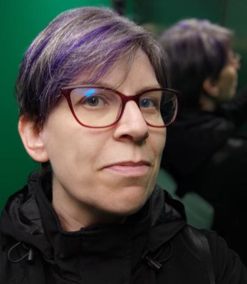

Laura M. Castro

Ola! Chegaches ao meu sitio web.
Son Laura Castro, enxeñeira informática, doutora en computación e profesora na Universidade da Coruña (UDC).
Aquí poderás atopar as actividades de divulgación que realizo, os proxectos nos que estou involucrada, as miñas publicacións científicas e tamén as materias, cursos e traballos académicos que imparto, coordino ou titorizo.
Se queres contactar comigo, o medio máis efectivo é o correo electrónico. Ah! E se che presta, eis algunhas redes sociais nas que tamén publico cousas de cando en vez.
Grazas pola túa visita!
Novidades
(non perdas ningunha: suscríbete por RSS)
-
Personalización do modelo
Neste momento estou en tarefas de personalización do modelo.
-
Nova versión desta web
Tiña vontade xa hai tempo de actualizar e mudar o aspecto deste sitio.
Tamén podes consultar o histórico completo.